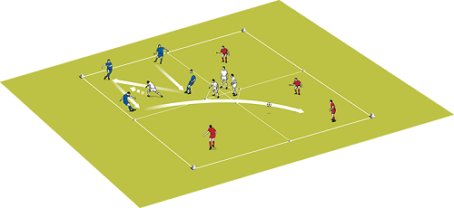

Win the ball, score a goal
In matches there are all sorts of situations that face a player - 1v1,
2v2, 3v3 and so on. You need your attacking players to take advantage of these situations to win the ball and fire a shot at goal.
Why join it
Joining this session because it gets you going head to head in a shoot out
Set up the activity
You need balls, bibs, cones and goals. Use half the pitch for this exercise.
Set up a goal at each end. For the first part you only need one goal but for the development phases you need two. We used 16 players.
How to play it
Four players either side of the goal from opposite teams, numbered 1 to 4 on each side.
Stand at the side in the middle of the pitch with some balls.
You call a number and the players called must run out to challenge for a ball you have served into the middle of the pitch.
You can call just one number for 1v1 or a combination of numbers to make 2v2 or 3v3.
You can make other combinations like 2v1 or 3v1 by calling numbers and colours.
Depending on where you serve the ball, you can favour one player or one part of the pitch.
The player who reaches the ball first must try to score, the other player must try to win possession then attack the goal themselves.
When the ball has gone out of play or into the goal the players go back to their positions and you call another number or combination of numbers and colours.
You can then add another goalkeeper and tell players the first player to the ball can choose to attack either goal, both goals are in play until the ball goes dead.
They can lose their opponents with quick turns and feints, or if there is more than one player they can use skills like one-twos.
Turn this into a small-sided game by calling out ALL numbers. The aim of this game is for teams to score in either of the goals so they defend and attack at both
ends of the pitch.
Technique
The possession players need to concentrate and show you they are technically good.
Their passing has to be accurate and precise. They also have to think ahead, knowing where they are going to play the ball before they receive it.
The defenders have to use a high tempopress and be prepared towork hard in short bursts.
 1. Play a 4v1 in the squares – the target is 5 passes without the lone defender touching the ball
1. Play a 4v1 in the squares – the target is 5 passes without the lone defender touching the ball
2. When the target number of passes have been reached the 4 players in the other squares join up in one square and a new defender comes from the central zone.

3. The first defender returns to the central zone and the 4 passers disperse across the three free squares
4. Defenders defend for 2 minutes then swap5. Progress the session by reducing the number of passes needed from 5 to 3 but the last pass must be first time